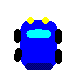
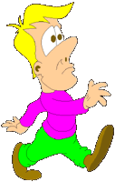
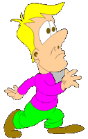
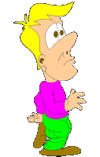
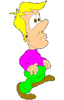
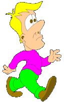
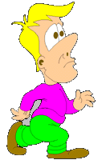
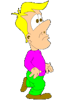
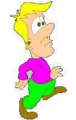

今回は、画像や文字を使ったアニメーションをやってみたいと思います。 プログラムは、前回までに習ったこととほとんど同じです。
1: /* 2: * 車が回るプログラム 3: * 4: * 2003/06/23 Yoshiaki Matsuzawa 5: * 2012/11/07 改訂 Yoshiaki Matsuzawa 6: */ 7: public class RotateCar extends Turtle { 8: 9: // 起動処理 10: public static void main(String[] args) { 11: Turtle.startTurtle(new RotateCar()); 12: } 13: 14: // タートルを動かす処理 15: public void start() { 16: ImageTurtle car = new ImageTurtle("car.gif"); 17: { // アニメーションループ 18: while (true) { 19: sleep(0.1); 20: { // 処理 21: car.rt(5); 22: } 23: update(); 24: } 25: } 26: } 27: 28: }
ここ をクリックすると、プログラムをダウンロードできます。
下のボタンを押すと、RotateCarプログラムが実行できます。
ImageTurtleクラスを使うと、画像をオブジェクトとして、 タートルのように扱うことができます。
例えば、上記のRotateCar.javaアニメーションで、car.gifを使う場合は、 その2つ（RotateCar.javaとcar.gif）を同じフォルダに置く必要があります。
同じフォルダに置いていないと画像が表示されません。
使える画像の種類は「.gif」「.jpg」「.jpeg」のどれかです。 「.bmp」の画像は使えないので注意してください。
show(), hide() 命令を使うと、オブジェクトを隠したり、 出現させたりすることができます。
下のプログラムは、車が点滅するプログラムです。
1: /* 2: * 車を点滅させるプログラム 3: * 4: * 2003/06/23 Yoshiaki Matsuzawa 5: * 2012/11/07 改訂 Yoshiaki Matsuzawa 6: */ 7: public class OnAndOffCar extends Turtle { 8: 9: // 起動処理 10: public static void main(String[] args) { 11: Turtle.startTurtle(new OnAndOffCar()); 12: } 13: 14: // タートルを動かす処理 15: public void start() { 16: ImageTurtle car = new ImageTurtle("car.gif"); 17: { // アニメーションループ 18: int i = 0; 19: while (true) { 20: sleep(0.2); 21: { // 1コマの処理 22: if ((i % 2) == 0) { 23: car.show(); 24: } else { 25: car.hide(); 26: } 27: } 28: i++; 29: update(); 30: } 31: } 32: } 33: 34: }
ここ をクリックすると、プログラムをダウンロードできます。
下のボタンを押すと、OnAndOffCarプログラムが実行できます。
画像タートルを使って、青信号は点滅させ、車は前に進め、かざぐるまは回転させるプログラムを作ってください。 画像は以下のものをダウンロードして使ってください。

ブラウザからデスクトップに画像をドラッグドロップすると、デスクトップに画像をダウンロードすることができます。
（プログラムと同じフォルダに置いていないと画像が表示されません。）
（使える画像の種類は「.gif」「.jpg」「.jpeg」のどれかです。 「.bmp」の画像は使えないので注意してください。）
looks命令を使うと、 オブジェクトの見た目を別のオブジェクトのものにすることができます。
例えば、次のプログラムは、 ただじゃんけんのグーチョキパーを表示するだけですが、、、
1: /* 2: * じゃんけんの絵を登場させるプログラム 3: * 4: * 2003/05/08 Yoshiaki Matsuzawa 5: * 2012/11/07 改訂 Yoshiaki Matsuzawa 6: */ 7: public class JankenCharacters extends Turtle { 8: 9: // 起動処理 10: public static void main(String[] args) { 11: Turtle.startTurtle(new JankenCharacters()); 12: } 13: 14: // タートルを動かす処理 15: public void start() { 16: Goo g = new Goo(); 17: Choki c = new Choki(); 18: Paa p = new Paa(); 19: 20: g.warp(100, 100); 21: c.warp(200, 100); 22: p.warp(300, 100); 23: } 24: 25: }
ここ をクリックすると、プログラムをダウンロードできます。
下のボタンを押すと、JankenCharactersプログラムが実行できます。
次のように、looks命令を使うと、 グーの見た目をチョキやパーに変えることができます。
1: /* 2: * じゃんけんアニメーションプログラム 3: * 4: * 2003/05/08 Yoshiaki Matsuzawa 5: * 2012/11/07 改訂 Yoshiaki Matsuzawa 6: */ 7: public class JankenAnimation extends Turtle { 8: 9: // 起動処理 10: public static void main(String[] args) { 11: Turtle.startTurtle(new JankenAnimation()); 12: } 13: 14: // タートルを動かす処理 15: public void start() { 16: Goo g = new Goo(); 17: Choki c = new Choki(); 18: Paa p = new Paa(); 19: { // c//初期位置にワープ 20: g.warp(100, 100); 21: c.warp(200, 100); 22: p.warp(300, 100); 23: } 24: { // アニメーションループ 25: int i = 0; 26: while (true) { 27: sleep(0.5); 28: { // 一コマの処理 29: if ((i % 3) == 0) { 30: g.looks(g); 31: } else if ((i % 3) == 1) { 32: g.looks(c); 33: } else { 34: g.looks(p); 35: } 36: } 37: i++; 38: update(); 39: } 40: } 41: } 42: }
ここ をクリックすると、プログラムをダウンロードできます。
下のボタンを押すと、JankenAnimationプログラムが実行できます。
じゃんけんを応用すると、ぱらぱら漫画の要領で、 人が動作しているようなアニメーションを作ることができます。
1: /* 2: * 人が歩くアニメーションプログラム 3: * 4: * 2003/06/17 Yoshiaki Matsuzawa 5: * 2012/11/07 改訂 Yoshiaki Matsuzawa 6: */ 7: public class WalkingMan extends Turtle { 8: 9: // 起動処理 10: public static void main(String[] args) { 11: Turtle.startTurtle(new WalkingMan()); 12: } 13: 14: // タートルを動かす処理 15: public void start() { 16: hide(); 17: ImageTurtle man1 = new ImageTurtle("man1.gif"); 18: ImageTurtle man2 = new ImageTurtle("man2.gif"); 19: ImageTurtle man3 = new ImageTurtle("man3.gif"); 20: ImageTurtle man4 = new ImageTurtle("man4.gif"); 21: ImageTurtle man5 = new ImageTurtle("man5.gif"); 22: ImageTurtle man6 = new ImageTurtle("man6.gif"); 23: ImageTurtle man7 = new ImageTurtle("man7.gif"); 24: ImageTurtle man8 = new ImageTurtle("man8.gif"); 25: { // c//1番以外のアニメーション用画像を消す 26: man2.hide(); 27: man3.hide(); 28: man4.hide(); 29: man5.hide(); 30: man6.hide(); 31: man7.hide(); 32: man8.hide(); 33: } 34: { // アニメーションループ 35: int i = 0; 36: while (true) { 37: sleep(0.1); 38: { // 一コマの処理を行う 39: if ((i % 8) == 0) { 40: man1.looks(man1); 41: } else if ((i % 8) == 1) { 42: man1.looks(man2); 43: } else if ((i % 8) == 2) { 44: man1.looks(man3); 45: } else if ((i % 8) == 3) { 46: man1.looks(man4); 47: } else if ((i % 8) == 4) { 48: man1.looks(man5); 49: } else if ((i % 8) == 5) { 50: man1.looks(man6); 51: } else if ((i % 8) == 6) { 52: man1.looks(man7); 53: } else if ((i % 8) == 7) { 54: man1.looks(man8); 55: } 56: } 57: i++; 58: update(); 59: } 60: } 61: 62: } 63: }
ここ をクリックすると、プログラムをダウンロードできます。
下のボタンを押すと、WalkingManプログラムが実行できます。
このアニメーションでは、次の8枚の画像が使われています。
       
さらに、背景を付け加えると、動いているように見えます。
1: /* 2: * 人が歩くアニメーションプログラム(背景付き) 3: * 4: * 2003/06/17 Yoshiaki Matsuzawa 5: * 2012/11/07 改訂 Yoshiaki Matsuzawa 6: */ 7: public class WalkingManWithBg extends Turtle { 8: 9: // 起動処理 10: public static void main(String[] args) { 11: Turtle.startTurtle(new WalkingManWithBg()); 12: } 13: 14: // タートルを動かす処理 15: public void start() { 16: 17: {// ウインドウを移動, 大きさ調整 18: window.warp(100, 100); 19: window.size(480, 420); 20: hide();// 亀を消去 21: } 22: 23: // バックグラウンド画像を用意する 24: ImageTurtle bg = new ImageTurtle("bg.jpg"); 25: 26: // アニメーション用画像を用意する 27: ImageTurtle man1 = new ImageTurtle("man1.gif"); 28: ImageTurtle man2 = new ImageTurtle("man2.gif"); 29: ImageTurtle man3 = new ImageTurtle("man3.gif"); 30: ImageTurtle man4 = new ImageTurtle("man4.gif"); 31: ImageTurtle man5 = new ImageTurtle("man5.gif"); 32: ImageTurtle man6 = new ImageTurtle("man6.gif"); 33: ImageTurtle man7 = new ImageTurtle("man7.gif"); 34: ImageTurtle man8 = new ImageTurtle("man8.gif"); 35: 36: { // 準備 37: man1.warp(240, 240); 38: man2.hide(); 39: man3.hide(); 40: man4.hide(); 41: man5.hide(); 42: man6.hide(); 43: man7.hide(); 44: man8.hide(); 45: } 46: 47: {// アニメーションループ 48: int i = 0; 49: while (true) { 50: 51: // --- 待つ --- 52: sleep(0.1); // 0.1秒 53: 54: { // 一コマの処理 55: // 背景を動かす 56: int x = bg.getX(); 57: int y = bg.getY(); 58: bg.warp(x - 2, y); 59: if (i % 8 == 0) { 60: man1.looks(man1); 61: } else if (i % 8 == 1) { 62: man1.looks(man2); 63: } else if (i % 8 == 2) { 64: man1.looks(man3); 65: } else if (i % 8 == 3) { 66: man1.looks(man4); 67: } else if (i % 8 == 4) { 68: man1.looks(man5); 69: } else if (i % 8 == 5) { 70: man1.looks(man6); 71: } else if (i % 8 == 6) { 72: man1.looks(man7); 73: } else if (i % 8 == 7) { 74: man1.looks(man8); 75: } 76: } 77: 78: // --- 再描画する --- 79: i++; 80: update(); 81: 82: } 83: } 84: 85: } 86: 87: }
ここ をクリックすると、プログラムをダウンロードできます。
下のボタンを押すと、WalkingManWithBgプログラムが実行できます。
オブジェクトは、new命令で作られた順番に、 後ろから重なっていきます。
背景を使うときは、人などの画像よりも先にnewして生成してください。
文字をつくるには、TextTurtleを使います。
1: /* 2: * 「こんにちは」が回るプログラム 3: * 4: * 2003/06/23 Yoshiaki Matsuzawa 5: * 2012/11/07 改訂 Yoshiaki Matsuzawa 6: */ 7: public class RotateText extends Turtle { 8: 9: // 起動処理 10: public static void main(String[] args) { 11: Turtle.startTurtle(new RotateText()); 12: } 13: 14: // タートルを動かす処理 15: public void start() { 16: TextTurtle hello = new TextTurtle("こんにちは"); 17: while (true) { 18: sleep(0.1); 19: hello.rt(5); 20: update(); 21: } 22: } 23: 24: }
ここ をクリックすると、プログラムをダウンロードできます。
下のボタンを押すと、RotateTextプログラムが実行できます。
文字も、「オブジェクト」ですから、タートルや、 画像と同じように扱うことができます。
文字オブジェクトは、 その文字を変化させるための特別な命令、text()を持っています。
1: /* 2: * 繰り返しを数えるカウンター 3: * 4: * 2003/06/23 Yoshiaki Matsuzawa 5: * 2012/11/07 改訂 Yoshiaki Matsuzawa 6: */ 7: public class Counter extends Turtle { 8: 9: // 起動処理 10: public static void main(String[] args) { 11: Turtle.startTurtle(new Counter()); 12: } 13: 14: // タートルを動かす処理 15: public void start() { 16: TextTurtle counter = new TextTurtle("繰り返し数"); 17: { // アニメーションループ 18: int i = 0; 19: while (true) { 20: sleep(0.1); 21: { // 処理 22: counter.text(i); 23: } 24: i++; 25: update(); 26: } 27: } 28: } 29: 30: }
ここ をクリックすると、プログラムをダウンロードできます。
下のボタンを押すと、Counterプログラムが実行できます。
ちなみに、下のプログラムのように、 文字と数字をつなげて、一つの文字にするには、+ 記号でつなげます。
文字列は、「"」で囲みますが、数字（変数）にはつけません。
1: /* 2: * 繰り返しを数えるカウンター (文字とつなげる版) 3: * 4: * 2003/06/23 Yoshiaki Matsuzawa 5: * 2012/11/07 改訂 Yoshiaki Matsuzawa 6: */ 7: public class Counter2 extends Turtle { 8: 9: // 起動処理 10: public static void main(String[] args) { 11: Turtle.startTurtle(new Counter2()); 12: } 13: 14: // タートルを動かす処理 15: public void start() { 16: TextTurtle counter = new TextTurtle("繰り返し数"); 17: { // 18: int i = 0; 19: while (true) { 20: sleep(0.1); 21: { // 処理 22: counter.text("現在の繰り返し数は" + i); 23: } 24: i++; 25: update(); 26: } 27: } 28: } 29: 30: }
ここ をクリックすると、プログラムをダウンロードできます。
下のボタンを押すと、Counter2プログラムが実行できます。
今回習ったことを用いて、楽しいアニメーションを作成してください。
1: /* 2: * アニメーションのサンプル 3: * 4: * 2003/05/08 Yoshiaki Matsuzawa 5: * 2012/11/07 改訂 Yoshiaki Matsuzawa 6: */ 7: public class AnimationSample extends Turtle { 8: 9: // 起動処理 10: public static void main(String[] args) { 11: Turtle.startTurtle(new AnimationSample()); 12: } 13: 14: // タートルを動かす処理 15: public void start() { 16: TextTurtle text = new TextTurtle("注目->"); 17: TextTurtle number = new TextTurtle(""); 18: ImageTurtle car = new ImageTurtle("car.gif"); 19: { // 初期化 20: number.warp(200, 100); 21: car.hide(); 22: } 23: { // アニメーションループ 24: int i = 10; 25: while (true) { 26: sleep(1); 27: { // 一コマの処理 28: number.text(i); 29: if (i == 3) { 30: number.color(java.awt.Color.red); 31: } 32: if (i <= 0) { 33: text.looks(car); 34: number.text("ぼかーん!!"); 35: } 36: } 37: i--; 38: update(); 39: } 40: } 41: } 42: 43: }
ここ をクリックすると、プログラムをダウンロードできます。
下のボタンを押すと、AnimationSampleプログラムが実行できます。
ファイル名は「MyAnimation.java」とすること．
「たなくじ」または「おれねこ」のアニメーションを作ります。（それが何か分からない人は、googleってみると良いでしょう。） ただし，画像は1枚だけ表示するものを作ってください。
注意点:
前の問題（0655アニメーションを作ろう（１））を改良して，画像を3枚表示するものを作ってください。
注意点については（１）と同様のこと．ファイル名は「Zero655.java」のままでよい。
前の問題（0655アニメーションを作ろう（２））を改良して，画像をたくさん表示し、お手本と同用のものになるように改良してください。 音楽と画像があってると良いですね。
注意点については（１）と同様のこと．ファイル名は「Zero655.java」のままでよい。